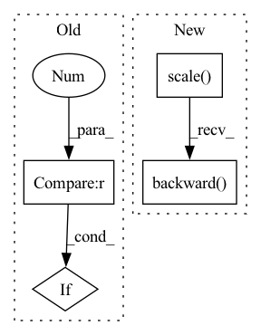

Pattern ID :19837
Before Change
scaler.scale(train_loss).backward()
del train_loss
grad_accum += 1
if grad_accum % gradient_accumulation == 0 :
grad_accum = 0
step_counter += 1
torch.nn.utils.clip_grad_norm_(net.parameters(), 1.0)After Change
if grad_accum % gradient_accumulation == 0:
grad_accum = 0
optimizer.zero_grad()
scaler.scale(accumulated_loss).backward()
accumulated_loss = 0.0
step_counter += 1
torch.nn.utils.clip_grad_norm_(net.parameters(), 1.0)
scaler.step(optimizer)In pattern: SUPERPATTERN
Frequency: 3
Non-data size: 4
Instances Fragment ID: 64525337
Project Name: digitalphonetics/ims-toucan
Commit Name: 99f87066428aae36c4c4d8dc82298e08d325ee85
Time: 2021-06-29
Author: florian.lux@ims.uni-stuttgart.de
File Name: TransformerTTS/transformer_tts_train_loop.py
M Class Name: AnonimousClass
N Class Name: AnonimousClass
M Method Name: train_loop(14)
N Method Name: train_loop(14)
M Parent Class:
N Parent Class:
M File Name: TransformerTTS/transformer_tts_train_loop.py
N File Name: TransformerTTS/transformer_tts_train_loop.py
M Start Line: 163
M End Line: 223
N Start Line: 144
N End Line: 217
Before Change
// Clip grads to counter exploding grads
max_norm = self._config["clip_max_norm"]
if max_norm > 0 :
torch.nn.utils.clip_grad_norm_(self._model.parameters(), max_norm)
self._optimizer.step()After Change
loss_abs = sum(losses.values())
self._optimizer.zero_grad()
self._scaler.scale(loss_abs).backward()
// Clip grads to counter exploding grads
// max_norm = self._config["clip_max_norm"]
// if max_norm > 0: Fragment ID: 64525338
Project Name: bwittmann/transoar
Commit Name: 67ff1090209f6d8c530711c83549b5eb060e64d6
Time: 2022-01-23
Author: bastian.wittmann@tum.de
File Name: transoar/trainer.py
M Class Name: Trainer
N Class Name: Trainer
M Method Name: _train_one_epoch(2)
N Method Name: _train_one_epoch(2)
M Parent Class:
N Parent Class:
M File Name: transoar/trainer.py
N File Name: transoar/trainer.py
M Start Line: 47
M End Line: 70
N Start Line: 50
N End Line: 82
Before Change
// If the embedding function changes more rapidly than the TTS can adapt to it, we run into issues.
bt_losses_this_epoch.append(bt_cycle_dist.item())
train_loss = train_loss + bt_cycle_dist
if step_counter % 1000 == 0 :
reg_loss = style_embedding_function.gst.calculate_ada4_regularization_loss()
train_loss = train_loss + reg_loss
reg_losses_this_epoch.append(reg_loss.item())After Change
reg_loss = style_embedding_function.gst.calculate_ada4_regularization_loss()
reg_losses_this_epoch.append(reg_loss.item())
optimizer.zero_grad()
scaler.scale(reg_loss).backward()
scaler.unscale_(optimizer)
torch.nn.utils.clip_grad_norm_(net.parameters(), 1.0, error_if_nonfinite=False)
scaler.step(optimizer)
scaler.update() Fragment ID: 64525339
Project Name: digitalphonetics/ims-toucan
Commit Name: 27e7d5239e3c73f64b935f79495b776f4e966dae
Time: 2022-10-31
Author: florian.lux@ims.uni-stuttgart.de
File Name: TrainingInterfaces/Spectrogram_to_Embedding/embedding_function_train_loop.py
M Class Name: AnonimousClass
N Class Name: AnonimousClass
M Method Name: train_loop(14)
N Method Name: train_loop(14)
M Parent Class:
N Parent Class:
M File Name: TrainingInterfaces/Spectrogram_to_Embedding/embedding_function_train_loop.py
N File Name: TrainingInterfaces/Spectrogram_to_Embedding/embedding_function_train_loop.py
M Start Line: 160
M End Line: 222
N Start Line: 146
N End Line: 200